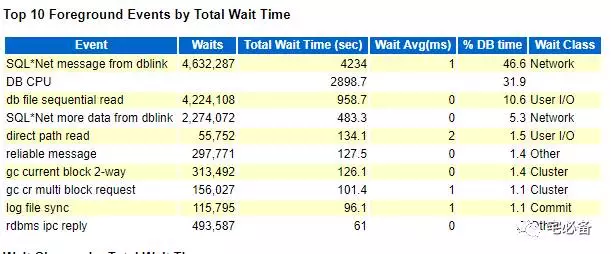
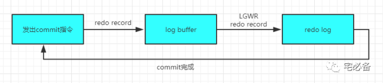
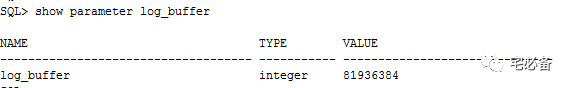
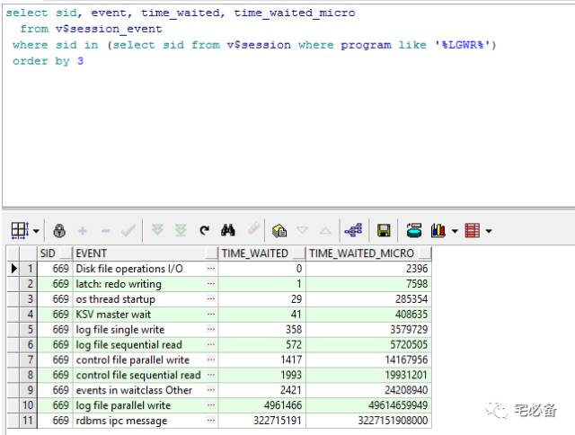
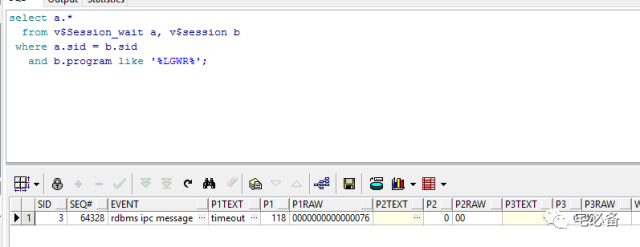

log file sync等待事件
原创 2017-07-25 Oracle 宅必备
从今天开始讲解awr报告Top 5 Timed Events部分
今天讲log file sync等待事件
log file sync

如何发生的
要弄懂log file sync，我们首先说下他们是如何发生的
当用户提交(commit)语句时，一个进程会建立一个redo 记录并把它拷贝至SGA中的log buffer中，然后这个进程会通知LGWR进程再将log buffer中的内容写入日志文件(redo file)中，同时清空log buffer的内容，最后返回完成消息，这就完成了一次commit操作

commit动作在LGWR进程没有返回完成消息前是不会完成的，我们把LGWR将log buffer中的内容写入日志文件(redo file)以及返回完成消息的这段时间标记为log file sync等待事件，它有个1s的超时时间
这个等待事件往往伴随着log file parallel write等待事件，这个下期讲解
log buffer大小

这里需要注意的是LGWR写log buffer内容至日志文件有多种情况
- 每三秒钟
- 每一次commit
- 当其 1/3满的时候
- 当其达到1M的时候
查看LGWR进程等待情况(整体)
通过上面的讲解我们知道log file sync事件和LWGR进程相关，我们可以查询
select sid, event, time_waited, time_waited_micro
from v$session_event
where sid in (select sid from v$session where program like '%LGWR%')
order by 3

通过上图我们可以看到LGWR进程主要的等待有哪些，哪些等待比较严重
- rdbms ipc message 表示LGWR正在等待写redo log，表示其处于空闲状体，我们不必理会
- log file single/parallel write 即我们今天所说的LGWR写redo 文件
其他的暂不讨论，大家可自行搜索
注意该视图中的数字是从实例启动起来的累计值
查询当前LGWR进程状态(实时)
select a.*
from v$Session_wait a, v$session b
where a.sid = b.sid
and b.program like '%LGWR%';

通过上图我们发现当前LGWR进程处于空闲状态，如发现为log file write等说明目前 LGWR进程正在繁忙
原因及改善
如果log file sync 等待事件占有过多的CPU时间，我们就需要注意了
- 低速的磁盘可能会导致LGWR进程写文件较慢从而导致log file sync等待，我们可以简单的通过avg waits 来判断，如超过15ms则说明磁盘可能是瓶颈，需要放到高速的磁盘，另外加日志组中成员文件放在不同的磁盘中
- 服务器CPU内存资源不足会导致进程相应缓慢，同样会增加log file sync等待，所以在调优时首先保证系统资源充足
- 数据库锁及latch也会影响log file sync等待
- 过大的log buffer 大小，log buffer过大可能导致刷新过于次数过低，从而导致单次刷新过慢
- 过多的commit操作，通过上面我们知道每次commit操作都会导致LGWR写操作，如commit过多则该等待则会明显的上升